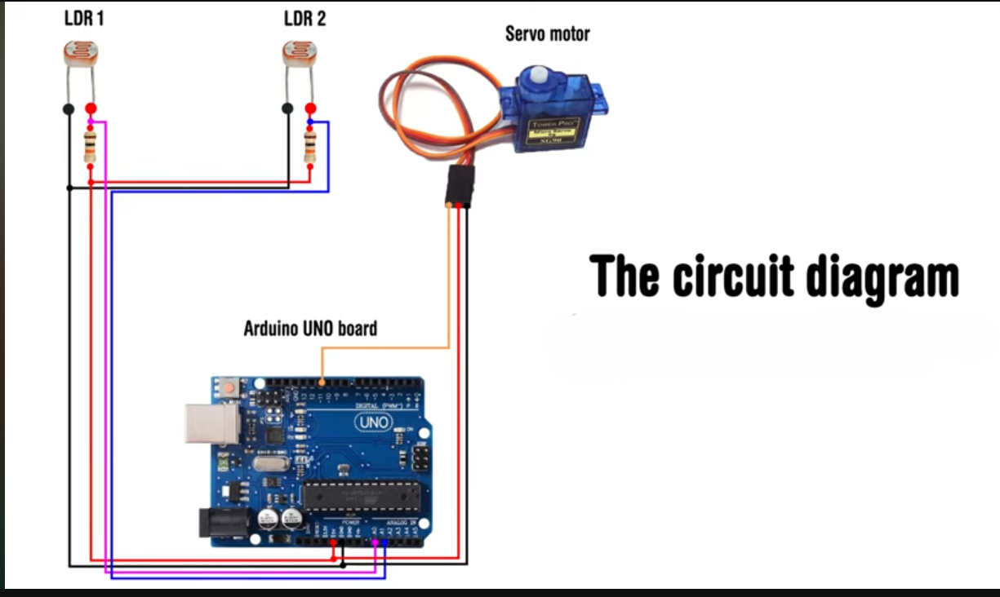
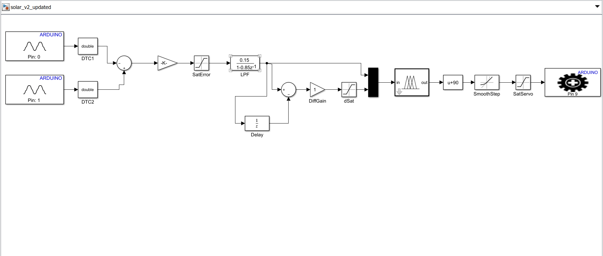

نظام تتبع شمسي ذكي باستخدام المنطق الضبابي سوجينو
Solar Tracker with Sugeno Fuzzy Inference System
تصميم ونمذجة ومحاكاة على MATLAB/Simulink ونشر الكود (C Code Generation) على متحكم Arduino Uno للتحكم الدقيق بتوجيه الخلايا الشمسية.
01 مقدمة عامة ودوافع المشروع
لماذا نحتاج لتتبع الشمس ذكياً بالمنطق الضبابي؟
أهمية التتبع الشمسي
زيادة كفاءة الألواح الشمسية تتطلب بقاء اللوح متعامداً مع الأشعة الساقطة طوال اليوم. الأنظمة الثابتة تفقد ما يصل إلى 40% من الطاقة المتاحة مقارنة بالأنظمة المتتبعة.
لماذا المنطق الضبابي (Fuzzy Logic)؟
التحكم التقليدي (مثل PID) يتطلب نموذجاً رياضياً دقيقاً للنظام، بينما المنطق الضبابي يعتمد على قواعد استدلالية قريبة من التفكير البشري (IF-THEN)، وهو مثالي للتعامل مع تغيرات الطقس والغيوم وضوضاء الحساسات بدون تعقيد رياضي.
خوارزمية سوجينو (Sugeno FIS)
تم اختيار نظام الاستدلال من نوع Sugeno zero-order خصيصاً لأنه يتميز بـ: كفاءة حسابية عالية مثالي للمتحكمات الدقيقة (Embedded C) مخرجاته قيم ثابته (Singletons)
02 المكونات الأساسية للنظام
تكامل العتاد (Hardware) مع البيئة البرمجية (Software)
العتاد الصلب (Hardware)
Arduino Uno
المتحكم الرئيسي الذي يستقبل الإشارات التناظرية ويقوم بالمعالجة وإصدار إشارة التحكم بالسيرفو.
حساسا LDR1 + LDR2
مقاومات ضوئية متجاورة تقيس شدة الضوء لليمين واليسار (موصولة بـ A0 و A1 مع مقسم جهد 10kΩ).
محرك سيرفو (Servo)
يقوم بتحريك اللوح في النطاق [0° - 180°] لاستيعاب حركة الشمس اليومية (موصول بالمنفذ الرقمي D9).
المكونات البرمجية (Software)
MATLAB & Simulink
البيئة الأساسية لبناء النموذج ومحاكاة الاستجابة وتصميم خوارزميات التمليس وتوليد كود C.
Fuzzy Logic Toolbox v2.4
تصميم محرك الاستدلال الضبابي وتحديد توابع الانتماء وقواعد الاستدلال الـ 15.
Embedded Coder & Arduino Support
توليد الأكواد البرمجية مباشرة من Simulink ورفعها كـ Firmware متطابق مع العتاد.
03 مخطط التوصيلات الكهربائية (Circuit Diagram)
طريقة توصيل المكونات على Breadboard مع Arduino Uno

اضغط على الصورة للتكبير
ربط المنافذ
| المكون | منفذ Arduino | ملاحظات |
|---|---|---|
| LDR1 (يسار) | A0 | مقسم جهد 10kΩ إلى GND |
| LDR2 (يمين) | A1 | مقسم جهد 10kΩ إلى GND |
| Servo Motor | D9 (PWM) | Vcc → 5V, GND → GND, Signal → D9 |
| التغذية | 5V / GND | مشتركة بين LDRs و Servo |
المكونات المستخدمة
04 بنية النظام ومسار الإشارة
تفصيل حركة البيانات من مستشعرات الضوء حتى محرك السيرفو
LDR1 & LDR2
Analog A0 / A1
حساب الخطأ (Error)
Gain 0.45 & Saturation
مرشح تمليس LPF
ALPHA = 0.15
خوارزمية FLC
Sugeno FIS (Error & dError)
محرك السيرفو
Servo D9 (+90 & Smooth 3°)
النموذج النهائي على Simulink
نموذج النظام الكامل من LDR → FLC → Servo مع Smooth Step و dSat

اضغط على الصورة للتكبير — مسار الإشارة: Sum → Gain → LPF → FLC → Bias → SmoothStep → Servo
05 تصميم توابع الانتماء (Membership Functions)
تمثيل البيانات الغامضة في محرك الاستدلال الضبابي
مدى المتغير: [-90°, +90°]
يتوزع الخطأ على 5 توابع انتماء من النوع المثلثي (trimf) لضمان دقة اتخاذ القرار ونعومة الانتقال:
| الدالة | الرمز | الحدود التناظرية |
|---|---|---|
| NB | خطأ سالب كبير | [-91, -90, -45] |
| NS | خطأ سالب صغير | [-90, -45, 0] |
| ZE | خطأ قريب من الصفر | [-45, 0, 45] |
| PS | خطأ موجب صغير | [0, 45, 90] |
| PB | خطأ موجب كبير | [45, 90, 91] |
مدى المتغير: [-10, +10]
تمثل مشتقة الخطأ سرعة تغير الإضاءة، وتنقسم لـ 3 توابع انتماء للتحكم بالاستقرار والسرعة:
| الدالة | الرمز | الحدود التناظرية |
|---|---|---|
| N | تغير سالب (سرعة سالبة) | [-10, -10, 0] |
| Z | استقرار (لا تغير) | [-5, 0, 5] |
| P | تغير موجب (سرعة موجبة) | [0, 10, 10] |
06 جدول القواعد الضبابية (Fuzzy Rules Table)
15 قاعدة تحكم منطقية لربط المدخلات بزاوية حركة المحرك
مصفوفة التحكم (Sugeno output Singletons)
مرر الفأرة فوق خلايا الجدول لرؤية تركيب القاعدة (Rule Formulation) في الصندوق الأيمن.
|
dError
Error
|
Negative (N) | Zero (Z) | Positive (P) |
|---|---|---|---|
| NB | PB | PB | PS |
| NS | PS | PS | ZE |
| ZE | ZE | ZE | ZE |
| PS | ZE | NS | NS |
| PB | NS | NB | NB |
ثوابت المخرجات (Output Singletons)
منشئ القواعد التفاعلي
07 الإعدادات والمعاملات النهائية للنظام
المعايير المحددة التي تضمن استقرار الأداء وسرعة الاستجابة
كسب الخطأ (Gain)
يرفع من حساسية النظام للضوء البعيد. تم ضبطه لتأمين استجابة سريعة حتى في حالة ضعف الضوء الجانبي.
مرشح التمليس (ALPHA)
معامل تصفية الضوضاء بقيمة 0.15. يمنع الاهتزاز العنيف للسيرفو ويحافظ على ثبات القراءة.
زمن المشتقة (DT)
معدل تحديث الإشارة. يرسل التحديث للمحرك كل ربع ثانية ليتوازن بين التحديث الفوري وتخفيف الضغط على المعالج.
حركة ناعمة (Smooth Step)
الزاوية تتغير تدريجياً بمقدار 3° كل 0.25 ثانية بدلاً من القفز المباشر، مما يمنع الاهتزاز والحركة المفاجئة.
تشبع المشتقة (dSat)
تحديد مدى مشتقة الخطأ لحماية المحرك من تغيرات الضوء الفجائية التي قد تسبب حركات مفاجئة.
كسب المشتقة (Diff Gain)
تخفيف حساسية المشتقة من ×4 إلى ×1 بالتوافق مع DT=0.25s لتقليل تضخم ضوضاء LDR ومنع الاهتزاز.
08 المشكلات الفنية والحلول المبتكرة
استعراض 9 عقبات فنية واجهت النظام أثناء النمذجة والرفع وكيفية التغلب عليها
اسم المشكلة
الظهور والسبب:
الوصف هنا
الحل المتبع:
الحل هنا
09 مقارنة أداء النظام (قبل وبعد التعديل)
نتائج الاختبارات والتحسينات الكمية والنوعية المضافة
المقارنة الكمية
| المقياس | قبل التعديل | بعد التعديل |
|---|---|---|
| حساسية الضوء البعيد (30cm) | لا يستجيب | يستجيب بدقة |
| اهتزاز السيرفو المستمر | اهتزاز عنيف ومستمر | مستقر وثابت |
| زمن الاستجابة (63%) | ~ 9.5 sec | ~ 3.0 sec (أسرع 3x) |
| الاستجابة عند الأطراف ±90° | انخفاض الناتج لـ 0° | الحفاظ على ±90° |
| توجيه التحكم | معكوس (يمين يذهب يسار) | صحيح ومتطابق |
| استهلاك الذاكرة (Flash) | --- | 8552 Byte (26.1%) |
منحنى زمن الاستجابة (ثوانٍ)
نظام تتبع شمسي ذكي باستخدام المنطق الضبابي سوجينو (Sugeno FIS)